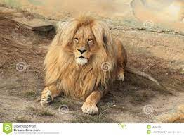
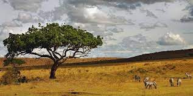

The lion is a carnivorous mammal of the Felidae family and one of the five species of the Panthera genus.
Some characteristics about the lion could be:
Some places where the lions live
There are 7 types of lions but the two most important are the Congo lion and the katanga
Panthera leo azandica
Panthera leo bleyenberghi
On this page we can find more information about this species
Web siteHere we can see a photo of the katanga lion
Go to types The lions as I said before live in incredible places here we can see a photo of one of them:
Go to places 